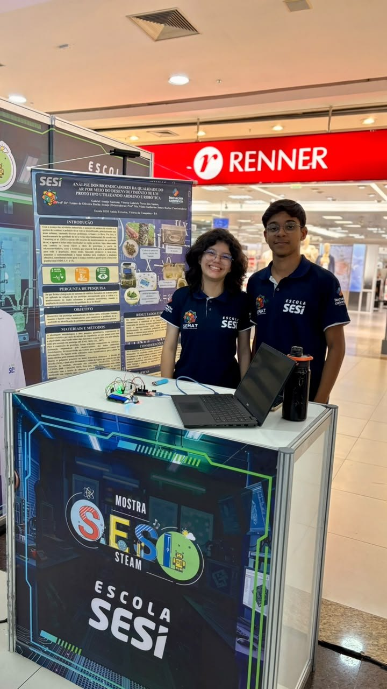
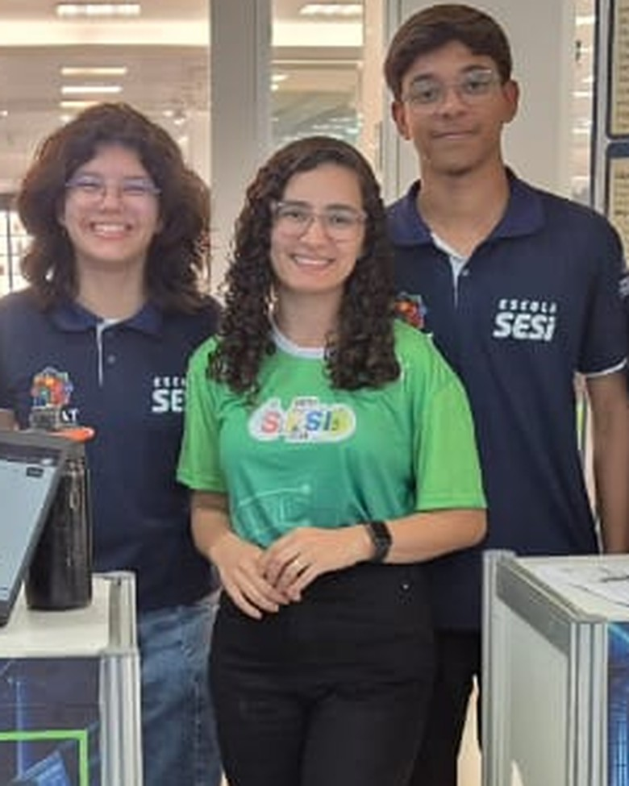
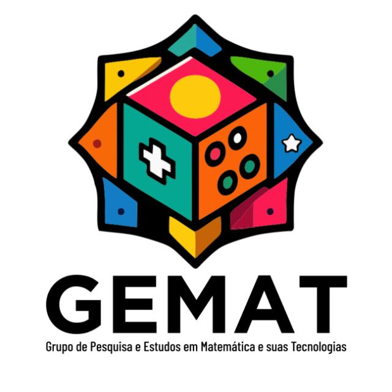

Diário de Bordo
Análise dos bioindicadores da qualidade do ar por meio do desenvolvimento de um protótipo utilizando Arduino e robótica
O registro da nossa caminhada na Iniciação Científica, de julho de 2025 a outubro de 2026: ideias, bancas, estudos, dias de laboratório e feiras, contados por quem escreveu o caderno.

Mostra SESI STEAM · outubro de 2026
Sobre o projeto
O projeto nasceu da vontade de criar um protótipo que ajudasse as pessoas a conhecer a qualidade do ar do lugar onde estão. A ideia começou em 2025, com Gabriel e Vitória, dentro da GEMAT, grupo de Iniciação Científica da Escola SESI de Vitória da Conquista.
A pesquisa usa os líquens como bioindicadores: eles mudam de cor quando expostos a poluentes. Unindo Biologia, Química, robótica e Arduino, o grupo busca uma forma acessível de monitorar o ar e de mostrar os resultados ao público por meio de um site.
Ao longo do caminho vieram o plano de pesquisa, duas bancas, a fase de laboratório e as inscrições em feiras como FEMIC, FENIC e FEBRAT, além da apresentação na Mostra SESI STEAM.
Mês a mês
Escolha um mês para ler as anotações mais importantes daquele período, resumidas do caderno.
As anotações em verde foram escritas por Bryan Jonathan Souza Cardoso, antigo integrante do grupo, que participou do projeto até julho de 2026 e deixou alguns registros no caderno.
—
O caderno digitalizado
As 46 páginas do diário de bordo. Clique para ampliar e passar as páginas.

Quem escreveu este diário

GEMATGrupo de Pesquisa e Estudos em Matemática e suas Tecnologias